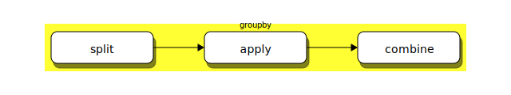

Operaciones avanzadas con DataFrames
Contenido
9. Operaciones avanzadas con DataFrames¶
Contenidos de esta lección
Creación de DataFrames con índices jerárquicos:
MultiIndexPatrón Split-Apply-Combine con
groupBy
Consideremos la siguiente tabla de la lección anterior con los datos del Censo 2017 de Chile
| ORDEN | NOMBRE REGIÓN | Código Región | NOMBRE PROVINCIA | Código Provincia | NOMBRE COMUNA | Código Comuna | Viviendas Particulares Ocupadas con Moradores Presentes | Viviendas Particulares Ocupadas con Moradores Ausentes | Viviendas Particulares Desocupadas (en Venta, para arriendo, Abandonada u otro) | Viviendas Particulares Desocupadas\n(de Temporada) | Viviendas Colectivas | TOTAL VIVIENDAS |
|---|---|---|---|---|---|---|---|---|---|---|---|---|
| 1 | ARICA Y PARINACOTA | 15 | ARICA | 151 | ARICA | 15101 | 62129 | 4574 | 4045 | 1666 | 225 | 72639 |
| 2 | ARICA Y PARINACOTA | 15 | ARICA | 151 | CAMARONES | 15102 | 431 | 96 | 158 | 242 | 21 | 948 |
| 3 | ARICA Y PARINACOTA | 15 | PARINACOTA | 152 | PUTRE | 15201 | 540 | 197 | 143 | 995 | 42 | 1917 |
| 4 | ARICA Y PARINACOTA | 15 | PARINACOTA | 152 | GENERAL LAGOS | 15202 | 218 | 90 | 162 | 216 | 11 | 697 |
| 5 | TARAPACÁ | 1 | IQUIQUE | 11 | IQUIQUE | 1101 | 56007 | 3673 | 5481 | 1564 | 261 | 66986 |
9.1. Manipución de índices y multi-índices¶
Estudiando la tabla anterior notamos que tiene una estructura jerárquica
REGION, PROVINCIA, COMUNA
Podemos representar este tipo de estructuras en pandas usando un MultiIndex
Creación y remoción de índices
Para asignar un índice a un DataFrame que ya está creado podemos usar el atributo
df.set_index(keys, # Una etiqueta o una lista de etiquetas que serán los nuevos índices
drop=True, # Eliminar las columnas que pasarán a ser índices
inplace=False, # Retornar un nuevo dataframe o modificar df
...
)
Si keys es una etiqueta crearemos un índice regular
Si keys es una lista crearemos un
MultiIndex
Si queremos que nuestro índice o multi-índice vuelva a convertirse en columna podemos usar el atributo
df.reset_index(level = None, # Permite especificar cuantos niveles de índices se removeran
drop: bool = False, # Si los índices se deben eliminar o agregar como columnas
inplace: bool = False, # Retornar un nuevo dataframe o modificar df
...
)
Ejemplo
Crearemos un MultiIndex para la tabla del censo. Usaremos dos niveles de jerarquía, el superior para región y el inferior para provincia. Esto se logra con
df.set_index(["NOMBRE REGIÓN", "NOMBRE PROVINCIA"], inplace=True)
Si inspeccionamos el objeto df.index veremos lo siguiente:
MultiIndex([( 'ARICA Y PARINACOTA', 'ARICA'),
( 'ARICA Y PARINACOTA', 'ARICA'),
( 'ARICA Y PARINACOTA', 'PARINACOTA'),
...
Ejemplos de Slicing con MultiIndex
Para recuperar un elemento de un DataFrame con MultiIndex podemos indexar usando una tupla especificando cada uno de los niveles de índices
Por ejemplo para recuperar una fila en particular usamos
df.loc[("LOS RÍOS", "VALDIVIA", "VALDIVIA")]
Lo cual retorna la comuna de Valdivia
Si queremos recuperar un conjunto de elementos podemos usar
df.loc[("LOS RÍOS", "VALDIVIA")]
Lo cual retorna todas las comunas de la provincia de Valdivia
También podríamos usar
df.loc[("LOS RÍOS")]
Lo cual retorna todas las comunas de región de los rios
Para hacer slices o fancy indexing, lo más simple es usar el objeto IndexSlice
Por ejemplo para recuperar dos filas usamos
idx = pd.IndexSlice
df.loc[idx[:, :, ["VALDIVIA", "OSORNO"]], :]
Lo cual retorna las comunas de Valdivia y Osorno
Para recuperar subconjuntos arbitrarios de filas en base al índice jerárquico podemos usar
idx = pd.IndexSlice
df.loc[idx[:, ["LLANQUIHUE", "PALENA"], : ], :]
Lo cual retorna las comunas pertenecientes a las provincias de Llanquihue y Palena
9.2. Patrón Split-Apply-Combine en DataFrames¶
Digamos que queremos obtener los totales de todos los tipos de vivienda a nivel de provincia
Si asignamos “NOMBRE PROVINCIA” como índice podríamos usar
result = []
for provincia in df.index.unique():
sub_df = df.loc[provincia, col_mask]
if sub_df.ndim>1:
result.append(df.loc[provincia, col_mask].sum())
else: # No hacer reducción suma si la provincia tiene una sola comuna
result.append(df.loc[provincia, col_mask])
pd.DataFrame(result, columns=col_mask, index=df.index.unique())
que obtiene el resultado deseado, pero es ineficiente y bastante engorroso
El ejemplo anterior representa un patrón de “operaciones condicionadas por llave” que es muy utilizado en bases de datos y se conoce como split-apply-combine
Donde
split: Divide los datos según una llave
apply: Realiza una función sobre cada grupo
combine: Mezcla el resultado en un nuevo dataframe donde la llave se convierte en el índice
En el ejemplo anterior
split: Crea subconjuntos con las comunas de cada provincia
apply: Hace una reducción suma en las columnas de viviendas
combine: Construye un nuevo dataframe con los resultados donde la llave son las provincias
Atributo groupby
El patrón split-apply-combine está implementado de forma muy eficiente en pandas a través del atributo groupby()
Los argumentos básicos de groupby son
df.groupby(by=None, # Columna o lista de columnas con se hace el split
axis=0, # Dividir en filas (0) o en columnas (1)
as_index: bool = True, # Retornar las etiquetas de cada grupo como índice
sort: bool = True, # Retornar las etiquetas de grupo ordenadas alfabeticamente
...
)
Notemos que groupby actua como un iterador
for (region, sub_df) in df.groupby('NOMBRE REGIÓN'):
display(region, # La etiqueta
sub_df # El dataframe con las filas que comparten esa etiqueta
)
La función que se ejecuta a cada grupo en el paso apply es un atributo de groupby, existen cuatro atributos
aggregate: Para hacer reduccionesfilter: Para eliminar filastransform: Para modificar filasapply: Función flexible que puede combinar lo que haceaggregateytransform
A continuación revisaremos las primeras tres en detalle
Reducción con aggregate
La sintaxis básica de este atributo es
# Para aplicar la misma función a todos las columnas
df.groupby(by=llave).aggregate(funcion1)
# Para aplicar varias funciones a todos las columnas
df.groupby(by=llave).aggregate([funcion1, funcion2, ...])
# Para aplicar funciones específicas a columnas específicas
df.groupby(by=llave).aggregate({columna1: funcion1, columna2: funcion2})
Las funciones debe entregar un sólo valor por cada columna del grupo
En general las reducciones se usan para hacer resumenes, por ejemplo sumas, promedios o varianzas
Ejemplo
Podemos encontrar los totales de vivienda por provincia en una sola linea usando
df.groupby(by="NOMBRE PROVINCIA", sort=False).aggregate(np.sum)
O usando el alias
df.groupby(by="NOMBRE PROVINCIA", sort=False).sum()
Filtrado con filter
La sintaxis básica de este atributo es
df.groupby(by=llave).filter(funcion)
La función debe retornar True o False
El resultado es un nuevo DataFrame con todos los grupos que “pasaron el filtro”
En general este atributo se usa para eliminar/descartar grupos de filas (drop)
Modificando el DataFrame con transform
La sintaxis básica de este atributo es
df.groupby(by=llave).transform(funcion)
La función debe retornar un dataframe con la misma dimensión y tamaño que el original y se aplica columna a columna
La función puede ser explicita o anónima (lambda)
Un uso típico de este atributo es el reescalamiento/normalización a nivel de grupo